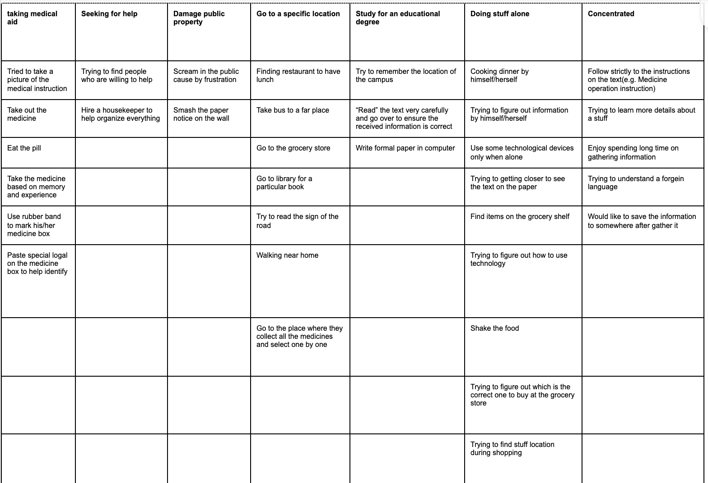
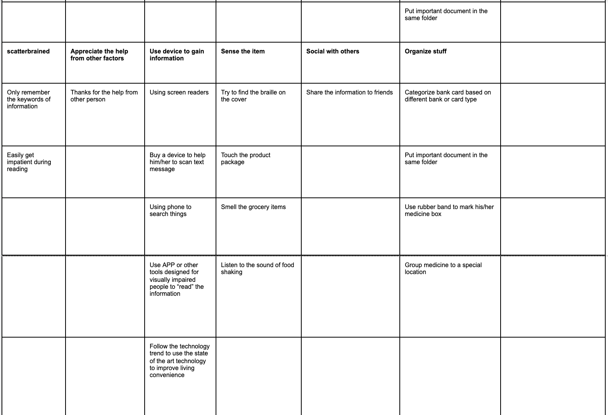
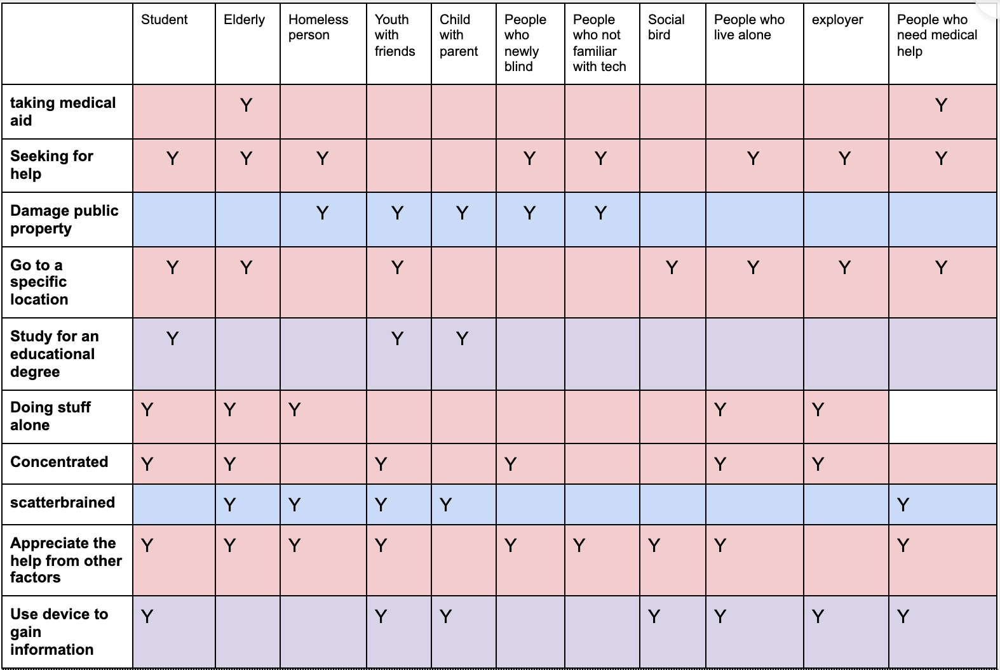
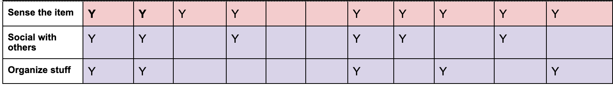
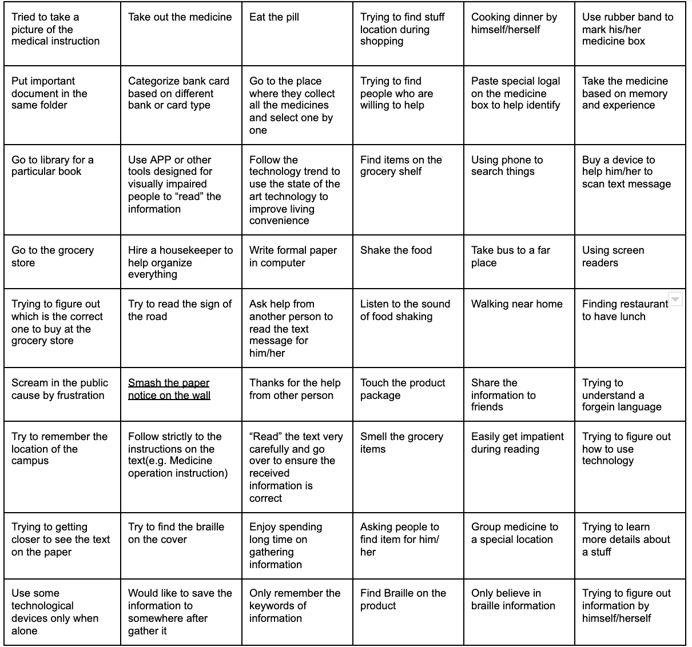
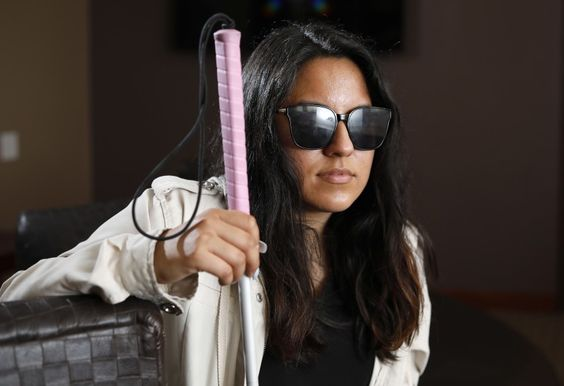
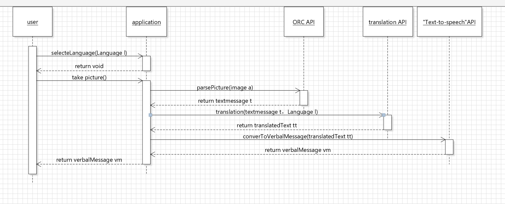
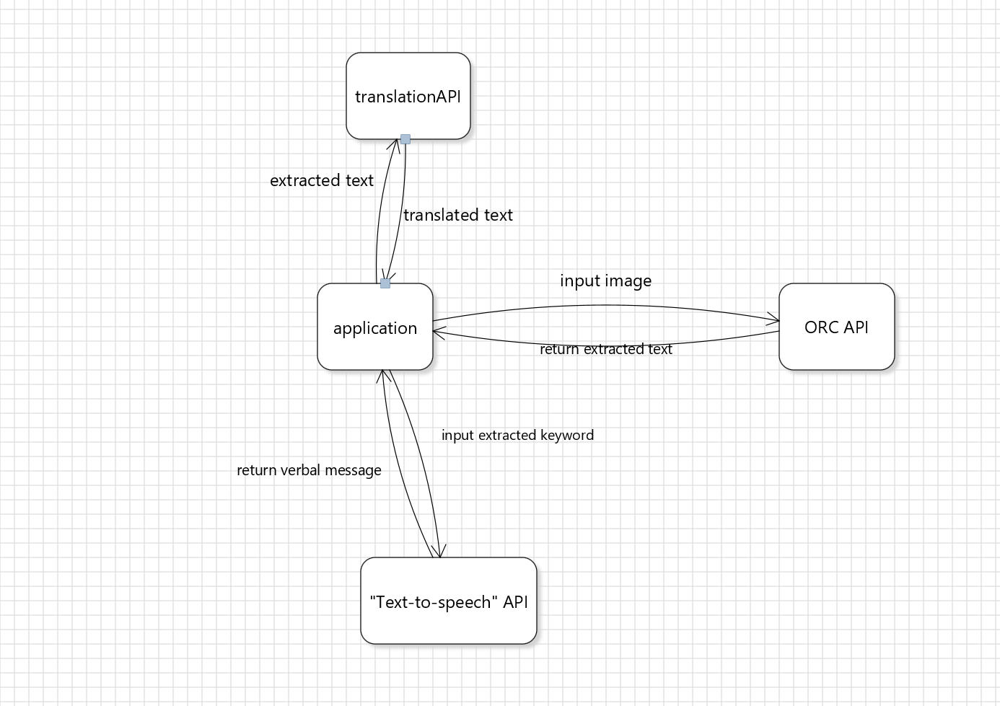

1. Observing users
User A Setting : LaCite apartment elevator
A blind middle aged man came into the laCite apartment elevator at night. He tried to press the button for his floor. After he pressed the button his finger touched the paper near the button panel. The paper had the information that the building will cut off the water supply tomorrow morning. He stood there and touched places around that area, tried to find out if there was any braille word but unfortunately it wasn't. He was confused and asked me to help (ask me what content was on the paper).
User B Setting: dollarama in Alexis Nihon
It was an afternoon after the last lecture. We were going to the dollarama inside the Alexis Nihon to buy some kitchen supplies and there was a blind elder man standing in front of the shelf of lamps with his white cane inside his pocket. He was walking around the shelf slowly and touched stuff one by one. Then he stopped his action and talked to the air: “Can you help me to find a Christmas tree light? I want white color light.” I passed one to him and took him to where the lights were located. I told him there are more colors and shapes, and I can see him picking a few more packages of lights and just standing there. Shake and touch, maybe 15 minutes long. From his actions I can see he was trying to buy a light that makes him satisfied. He looks frustrated just standing there touching and shaking to get more information about those products.
User C Setting: library located at La Chine
An elderly woman who was visually challenged tried to borrow a cooking book in front of the circulation desk of la chine library with her white cane on her left hand. The staff tried to find this book inside the system but the only version of this book was written in text form instead of braille. The staff asked the woman if she would be able to find someone to read out this book for her but the woman waved her head and said she lived by herself. The women pouted to show disappointment and left the library.
2. Identifying the problem
The visually impaired community have fantastic assistive technology and software to help them view content inside of smartphones: they have screen readers, braille keyboards, etc. However, we realize that they lack technology and software helping them read information which is not displayed by the phone/ laptop screen. For example, medical instruction, medicine name, passport information, information on the food package, words from traffic signals, and other word format instructions outside of the internet. This situation may get even worse when a visually ipaired person is trying to read a foreign language text.

reference:https://www.letsenvision.com/blog/challenges-blind-people-face-when-living-life
Based on this observation we came up with this idea which is to design an application that allows the blind user using phones to help them with the real world text-content: take a picture of the object, and its text will convert to a voice message/ speech of translated language. Right now, we only see the image to its corresponding speech. We haven't seen many ideas on images to translate speech, which is a great help for blind and visually impaired people to travel more easily to other foriegn countries. For our idea, no matter which language it is, the only thing they need to do is: choose language, take a photo, and listen.
3. Developing Personas
Brainstorming task
Followed by the methodology of Indi-Young’s article, we decided to use the task-based audience segment method to create our persona.
The exercise has three steps:
- List Distinguishing Behaviors
In this step, we must brainstorm users' behaviour at all stages, and we are going to list as many distinguishing actions as possible for before, during, and after getting text-based information. - Group the Behaviors from table 1
Table 2. Eliminate the duplicate


- Name the Groups  
Table 1. Brainstorm the things that people do before,during, after getting text-based information.
Personas:
Type :The reckless Name: John Anderson Gender: male Age:55 Job:unemployed Personality: stressed, Irritable,inattentive Goal: John blames his misfortune and inconvenience to the society and other people and looks for trouble when he encounters things that are not going his way such as not getting the information from a label of a product. He wants to express his anger to everyone and to the general public. Characterizing behaviour:John used to be a janitor in a small mall but during the pandemic he lost his job and lost the source of income. The loss of source of income and inconvenience on his sight cause him constantly feeling anger and frustration and the way for him to feel better is by damaging public signs or paper that he could not understand and blame other people who do not want to offer help.

Type: Self-sufficient Name: Anna Willson Gender: Female Age: 30 Job: Customer service representative Personality: independent, highly educated, omnipotent, brave & dynamical Goal: Anna Willson has so much curiosity, she likes traveling a lot because wants to know more about this world. She feels so sad for being blind, which makes her so much inconvenienced in life. She wants to use technology to help her seeing & feeling this world, to have a better quality of life and take her to see a bigger world. Characterizing behaviour: Anna Willson has a habit of traveling once per 6 months by herself. She is so independent that she always spends too much time figuring things out alone. She is brave, always tries things which blind people barely did before. One of her biggest hobbies is collecting special objects (e.g.souvenir ) from different countries.
Type: Help-needer Name: Albert Seavey Gender: Male Age: 60 Job: Retired person Personality: optimistic, humorous, grateful Goal: Albert’s life became inconvenient after he became blind at the age of 35, and as age grow, he developed diabetes as well. He could accept new devices but he cannot immediately become skillful to it and needs lots of time to practice. Albert hopes his life will get easier with the development of new technology. Characterizing behavior: Albert has diabetes and needs to go to the hospital regularly, he needs to deal with all kinds of medicine every day, but he’s not a well-organized person and sometimes knocks the box off the table. Most of the time his wife takes care of him, they will attend some event hosted by the local community for the visually impaired people, encourage each other and meet new friends.
4. Use Case Scenario Illustration
Anna traveled to another foregin country, and she went to a local souvenir store which sells special and meaningful stuff. She wants to pick one as a memento, and buy some as gifts for her friends. But she can’t see what’s inside of the store, and cannot figure out the object based on her sense and past experience. What she can do is to use our app, using technology to help her get all information on the package to help her choose the stuff she wants.
After she downloads our app from the app store, she can follow the voice from accessibility to open the app. Once she opens the app, the first step for her is to choose the language she wants to translate in the language selection page. The app will use voice to tell her she needs to choose a language now. She just needs to swipe the screen horizontally to change language(left and right) and the phone will tell her in voice which language she’s choosing. Right now our phone only supports 5 languages: English, Chinese, French, Spanish, and German. Select language, then double click screen, camera is opened, and she can get to the next step: taking photos.
The second step is taking photos. The app will tell her to take a photo now. When the camera is on, the system auto detect the camera status: if the left of the target object is missing, voice will tell her “shifting to the right”; if the top of the target object is missing, voice will tell her “shifting downward”; if the target object is too far away from the camera, the voice will tell her “move closer”, vise versa.
The target object will auto detect the object that takes most of the space on the screen as the target object, also focused on this object on the camera.
After the photo was taken, the third step app would do is to use voice to read the translated text which came from the photo (for sure we will tell her the status of loading when app is doing a translation).
So Anna can use the app, guide by voice, do hand gestures like double click and swipe, take photos, and the app can do the translation, image-to-speech all at once. Also if she is an English speaker, she just needs to choose English in translation step to satisfy her daily usage in her country.
5. Finding Related products
Google Lookout
https://www.youtube.com/watch?v=H6sBtxXK0-s“Lookout uses computer vision to provide information about your surroundings. Lookout uses the camera and sensors on your Android device to recognize objects and text, then tells you what it sees.”
Inspiration:
- Could give user directional feedbacks in space like “coffee maker 11o’ clock”.
- Almost no time delay, which is friendly to the users.
Problem founded:
As shown in the official video (https://www.theverge.com/2019/3/13/18263426/google-lookout-ai-visually -impaired-blind-app-assistance), users need to
“To use Lookout, Google recommends that users wear their Pixel device on a lanyard around their neck or placed in the front pocket of a shirt or coat. That way, the phone’s camera gets an unobstructed view of the world and can identify objects and text “in situations where people might typically have to ask for help.” This means that the user needs to always control the position of the phone, which isn’t that convenient.
Seeing AI
https://www.youtube.com/watch?v=6bx0Jtomn8I“Seeing AI is a Microsoft research project that brings together the power of the cloud and AI to deliver an intelligent app.”
It includes multiple functions as follow:
- Speaks text as soon as it appears in front of the camera.
- Provides audio guidance to capture a printed page, and recognizes the text, along with its original formatting.
- Gives audio beeps to help locate barcodes and then scans them to identify products
- Recognizes friends and describes people around you, including their emotions
- An experimental feature to describe the scene around you
- Identify currency bills when paying with cash
- Generate an audible tone corresponding to the brightness in your surroundings
- Describes the perceived color
- Reads handwritten text
Inspiration:
- Have many fancy functions.
- While reading the text information from pictures, it seems the app first detects the contour of the paper then does the OCR (Optical character recognition).
Problem founded:
- Only for iOS users
- Have multiple functions but the buttons are too small and it’s hard to switch between if the user cannot see anything.
- Not friendly for users trying to read a foreign language.
Envision AI for iOS and Android
https://www.youtube.com/watch?v=EXv3NSg0L0Y
“Envision App offers a range of visual recognition features that enables blind and visually impaired users to independently access visual information around them.
It excels in all kinds of text recognition, with the ability to read in over 60 languages. Be it handwritten notes, a cereal box, or that book you want to dive into. “
(https://www.letsenvision.com)
Inspiration:
- When clicking a different button there will be sound feedback indicating which button you are pointing at, which is friendly to the intended user group.
- Have zoom in/out when taking a picture.
- Users can control the audio output for the intended part of the text by sliding up/down the screen.
Problem founded:
- Using the full function requires In-App Purchases
- Have multiple functions but the interface contains many layers of manus to fully use the app and is hard to switch between if the user cannot see anything.
- Not friendly for users trying to read a foreign language. (Which is the reason why this app is graded 1 start in China App store as shown in the screenshot below)
The 1-star comment: cannot be used in mainland China
6. Product comparison
Getting inspired by the existing related products and having the thought of focusing our goal on narrower scenarios, we think our project has the following edges.
- No need to wear the phone on the chest all the time, there will be audio feedback to guide the user in moving the camera to a correct position, which will be more convenient for users.
- User-friendly interface. Our product will put more focus on people who cannot see anything and try to complete the interaction within a few physical buttons on the phone and clicking style, rather than design a complex user interface.
- Enable translation. Regarding some scenarios that some users want to read the text on imported products, which are sometimes in a foreign language, helping the user to translate that information will alleviate the user’s burden.
7. High-level design of system
Our application’s backend will be built using the Java programming language with some additional APIs and it will run on the cell phone, to achieve the “translation”, “camera status detection”, “text extraction” functions. The Frontend will be built by Java Swing and it is in charge to use verbal messages first prompting the user a list of languages to be translated into in the language selection page, and swiping the screen horizontally to choose the language he/she wants to be translated with the voice guidance.
After double clicking the screen to decide language, frontend remind users the camera is on, and prompt the user to use the camera on their device to take an image of the document by double tapping the screen with the camera-object-detection functionality (which is achieved by using object-detection API).
Taken photo will be send to the backend of the application and the image is sent by the backend to the ORC API for extracting text from the image. After we get the extracted text, the backend receives the result from the ORC API, and sends this result to a translation program (such as Google translate) together with the language user selected. Then the translated text is sent back to the backend of the app and it will be sent to the “Text-to-Speech” API for getting voice messages. Finally, the frontend of the app receives voice messages from the “Text-to-Speech” API, and plays the voice content to the user.
This is the sequence diagram for the Application:
This is the basic structure of the application:
8. Feasibility
There are 5 blocks of the project which are the backend of application that will handle all the input output message from all the API that we will be using, the ORC API that is responsible for extracting text message from an image, the Translator which could be Google translator, the “Text-to-speech”API that convert the text message to the verbal message and the most important part of the project is the frontend of the application since it includes the GUI that will interact with our intended user. The following chart will divide the project into multiple sections including those 5 blocks and assign estimated time for completion.
| Task | Description | Estimate time | Team member that has relative experience |
|---|---|---|---|
| Plan and build system structure | discuss the structure of the application and build UML for this app. | 5 hours | Lukas, Rose, JingYi Liu |
| Design UI | Design the UI for the application. | 4 hours | Rose, JingYi Liu |
| Frontend building | Using Java swing to build the frontend system that could interact with the user. | 55 hours | Lukas, Rose, JingYi Liu |
| Backend building | Using Java to build the logic of the Application,get used to the APIs that we will be using (ORC API, translate API, “Text-to-speech” API), handle the input output messages of the APIs. | 45 hours | Lukas, Rose |
| Testing | Debug the project by unit testing and test to see if the project meet the requirements | 10 hours | Lukas, Rose, JingYi Liu |
The estimated times for each section have been assigned based on the current knowledge and programming skill of each team member. All the group members have projects building experience before and are familiar with the common programming language such as JAVA and C and we believe we have sufficient enough knowledge to handle these 5 blocks of the projects.
The main challenges could be the communication between the application and APIs but we already find out some APIs that meet our requirements and will use the knowledge from the internet to help us to better understand how to connect these APIs into our app.
Here is the description of each team member’s skill and experience that's relevant to the above task.
Lukas: skill: JAVA, Java swing, UML drawing, testing skill experience: 1.Used to build a frontend system and UI design for a 2d strategy game. 2.learned Unit test and various other testing skills in COMP 303 and ECSE 429. 3.Write a backend system for a vaccination App. 4.Learn UML and various models in COMP 361.
Rose: skill: HTML, CSS, JAVA, UI/ UX, Figma experience: 1. Did unit testing before in Comp 303 and ECSE 429 2. Know how to use figma to design user interface 3. Intro level of Java Swing experience 4. Intermediate on Java, developed small project before 5. Know how to use SQL inside of a simple App
Yujing Liu: skill:HTML, CSS, JavaScript, UI/UX, APP development experience: Design webpage using HTML, CSS, JavaScript Use .NET Framework to design a PowerFlow software Use Matlab to design a step-response control system